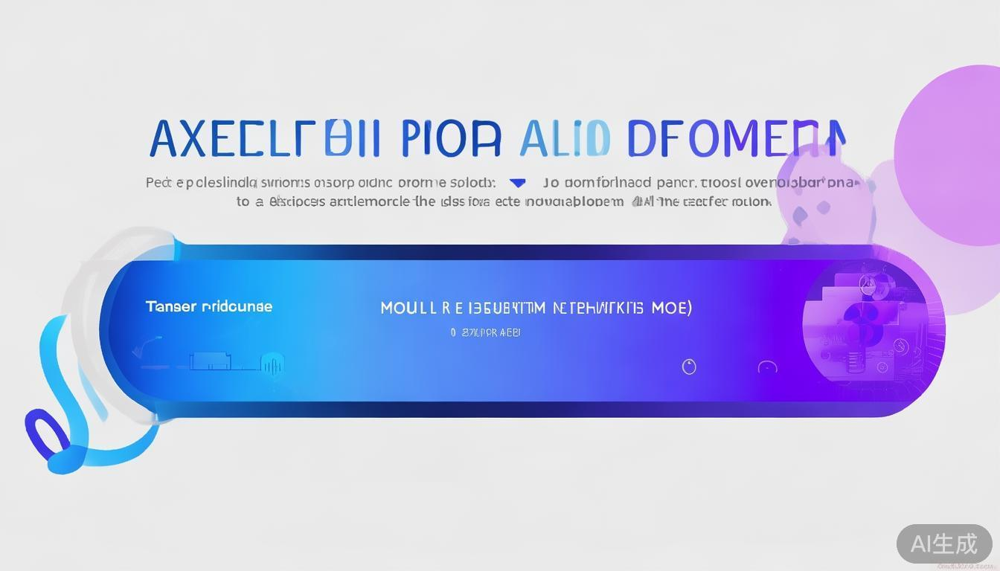

2026 AI 进阶实战：从模型原理到 Agent 部署的完整学习路径
AI 不会取代你，但掌握 AI 的人会。这句话流传太广，以至于没人记得是谁先说的——不过它指向的事实不需要作者背书：同一套工具，会不会用，产出差的是量级。这条学习路径不是一条直线，而是一个不断迭代的螺旋：每往上走一层，你都会重新理解下面那一层。
一、 夯实基础：数学、代码与硬件认知
在 2026 年，AI 的门槛看似降低，实则对底层逻辑的要求更高。盲目堆砌 Prompt 只能停留在工具使用者层面，无法触达核心技术。
首先，数学是 AI 的语言。你不需要成为数学家，但必须精通线性代数（理解张量运算、矩阵乘法是神经网络的基础）和概率论与数理统计（理解贝叶斯推断、分布与损失函数）。不要纠结于繁琐的公式推导，重点在于理解它们在代码中如何实现。
其次，Python 是唯一的通用语言。你需要熟练掌握 Python 标准库，并深入理解 PyTorch 或 TensorFlow 等深度学习框架。对于追求高性能的工程师，掌握 CUDA 编程基础和 GPU 内存管理是必要的。理解如何向 GPU 传输数据、如何优化张量计算，将直接决定你模型的推理速度。
1.1 推荐资源与实战
- 数学： 3Blue1Brown 的《线性代数的本质》视频（作为直觉入门），配合《数学之美》阅读。
- 编程： 不要只看教程，去 GitHub 上复现经典的 ResNet 或 Transformer 模型，亲手实现前向传播和反向传播。
- 硬件： 如果条件允许，组装一台配备 RTX 4090 或 H100 的本地工作站；如果预算有限，熟练使用 Google Colab Pro+ 或 AWS SageMaker。
二、 核心算法：从 Transformer 到 MoE

大语言模型（LLM）的基石是 Transformer 架构。在 2026 年，单纯调用 API 已不足以构建差异化产品，理解模型内部机制是进阶的关键。
你需要深入理解注意力机制（Self-Attention）、位置编码以及层归一化。这些看似简单的组件，构成了 AI 处理长文本和上下文依赖的核心能力。
此外，要关注模型的进化方向。Mixture of Experts (MoE)（混合专家模型）已成为当前大模型的主流架构，理解其稀疏激活机制对提升推理效率至关重要。同时，多模态融合技术（如 CLIP、LLaVA）已不再是新鲜事，掌握如何将视觉、音频与文本特征对齐，是构建全能型 Agent 的必备技能。
2.1 微调与对齐技术
预训练模型虽然强大，但往往存在知识滞后或安全风险。指令微调（SFT） 和人类反馈强化学习（RLHF） 是让模型具备特定行为的核心技术。
学习如何构建高质量的指令数据集，如何使用 LoRA 或 QLoRA 等高效微调方法，在保持模型性能的同时降低显存占用，是每一位 AI 工程师必须掌握的“内功”。
三、 工程落地：RAG 与 Agent 架构实战
2026 年，AI 的应用已经从“生成文本”转向了“解决复杂问题”。RAG（检索增强生成）和 Agent（智能体）是当前最主流的落地架构。
RAG 不仅仅是简单的向量检索。你需要精通向量数据库（如 Milvus, Pinecone, Weaviate）的选型与配置，以及重排序（Rerank）和HyDE（假设性文档嵌入）等高级检索策略，以减少模型的幻觉，提高回答的准确性。
更进一步，Agent 架构要求模型具备规划、记忆和工具调用能力。你需要学习如何使用 LangChain 或 LangGraph 等框架来构建多步推理链。这包括设计工具接口、处理错误重试机制以及管理长短期记忆。
3.1 构建一个端到端的 RAG 系统
不要只停留在理论。动手搭建一个基于本地文档的问答系统：
- 数据清洗： 使用 Unstructured 或 LlamaIndex 进行文档解析和分块。
- 嵌入与存储： 将文本转换为向量并存入 ChromaDB。
- 检索与生成： 编写检索逻辑，将 Top-K 相关文档作为上下文输入给 LLM。
- 评估： 使用 RAGAS 或 TruLens 等工具对回答的准确性和忠实度进行量化评估。
四、 部署与优化：从模型到服务的全生命周期
一个优秀的模型如果无法高效部署，在商业上就是失败的。2026 年的部署重点在于成本控制、速度优化和边缘计算。
首先，掌握模型量化技术。了解 INT4、INT8 量化原理，使用 GPTQ、AWQ 或 GGUF 等工具将庞大的模型压缩至几百 MB，使其能在消费级显卡甚至 CPU 上运行。
其次，熟悉高性能推理引擎。vLLM 和 TGI (Text Generation Inference) 是当前开源界的标准，它们通过 PagedAttention 等技术极大提升了吞吐量。学习如何配置这些引擎，如何处理并发请求和流式输出，是提升用户体验的关键。
4.1 容器化与云原生部署
将你的模型封装为 Docker 容器，并利用 Kubernetes 进行编排。理解 API 网关的配置，确保模型服务对外提供低延迟、高可用的接口。关注边缘侧部署，如使用 ONNX Runtime 在树莓派或专用芯片上运行轻量化模型，是物联网与 AI 结合的下一个风口。
结语：行动建议
AI 的学习是一场没有终点的马拉松。不要试图一次性学完所有知识，那是不可能的。
从今天开始，不要只做旁观者，要做实践者。选择一个你感兴趣的垂直领域（如法律、医疗或金融），利用上述学到的 RAG 和微调技术，亲手构建一个能解决实际问题的 Demo。在这个过程中，你会遇到无数的坑，但正是这些坑构成了你通往资深 AI 工程师的阶梯。保持好奇心，保持务实，开始你的实战吧。
出处声明
本文由 AI（智谱 GLM / 豆包 / DeepSeek）依据公开资讯辅助生成，内容以官方发布为准；如涉及具体数据、政策或产品细节，请以来源机构官方信息为准。本站不对因使用本文产生的决策后果负责。
出处声明：本页内容为白驹 ccowork原创，或已标注引用来源；改编内容遵循原始项目许可证（如 MIT / CC），不侵犯原作者权益。若引用内容涉及版权问题，请联系我们更正。